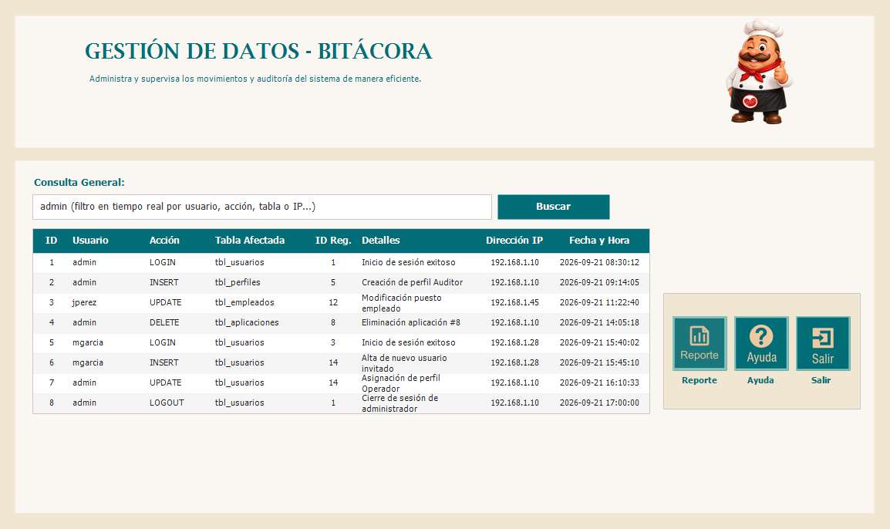
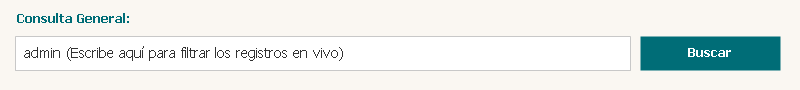
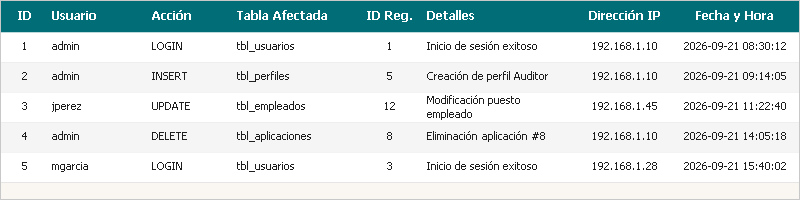
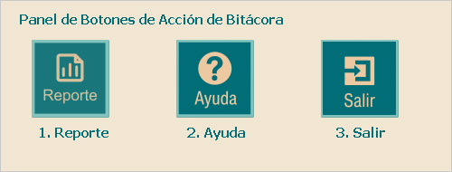

El módulo de Bitácora es la herramienta de seguridad y auditoría encargada de registrar, almacenar y supervisar todas las actividades, transacciones y cambios realizados por los usuarios dentro de los distintos componentes del sistema. Proporciona una trazabilidad completa para fines de supervisión, control interno e investigaciones de seguridad.


En la parte superior de la ventana encontrarás la barra de Consulta General:
• Caja de texto de búsqueda: Permite ingresar cualquier criterio de búsqueda como: nombre de usuario (ej. admin), tipo de acción (ej. INSERT, UPDATE, DELETE, LOGIN), nombre de la tabla afectada (ej. tbl_usuarios), número correlativo de ID, dirección IP o fecha específica (formato yyyy-MM-dd).
• Botón "Buscar" (o tecla Enter): Al presionar este botón o pulsar la tecla Enter en el teclado, el sistema filtra y actualiza al instante la lista de registros en la grilla inferior según el criterio ingresado. Si dejas el campo vacío y presionas Buscar, se volverán a mostrar todos los registros disponibles.

La grilla principal presenta la información organizada en columnas claras y detalladas:
• ID: Número de identificación único y correlativo de cada registro de auditoría.
• Usuario: Nombre de la cuenta de usuario que ejecutó la operación en el sistema.
• Acción: Acción efectuada por el usuario (LOGIN, LOGOUT, INSERT, UPDATE, DELETE).
• Tabla Afectada: Nombre de la entidad o tabla de la base de datos involucrada.
• ID Registro: Clave primaria o identificador del registro afectado dentro de la tabla.
• Detalles: Breve descripción o mensaje explicativo del movimiento realizado.
• Dirección IP: Dirección IP de red del equipo cliente desde donde se generó la petición.
• Fecha y Hora: Momento cronológico exacto en que se registró el evento.

En el costado derecho de la pantalla se ubica el panel con los 3 botones principales de operación:
• 1. Botón Reportes (Ícono de Gráfica / Reporte):
Al hacer clic izquierdo sobre este botón, el sistema abre la ventana de Reporte de Bitácora mediante el visor de Microsoft ReportViewer. Desde allí podrás generar un informe imprimible con filtros avanzados, exportar los registros a formatos como PDF o Excel, o enviar directamente a una impresora conectada.
• 2. Botón Ayuda (Ícono de Interrogación):
Al hacer clic izquierdo sobre este botón, el sistema detecta y abre de inmediato este manual interactivo en tu navegador web para resolver dudas sobre el funcionamiento y los controles de la bitácora.
• 3. Botón Salir (Ícono de Puerta / Flecha):
Al hacer clic izquierdo sobre este botón, se cierra la ventana de Bitácora de manera segura y regresas al menú principal o MDI del sistema de Seguridad.